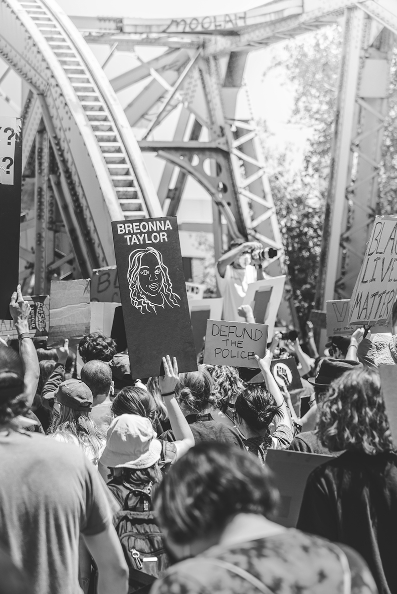
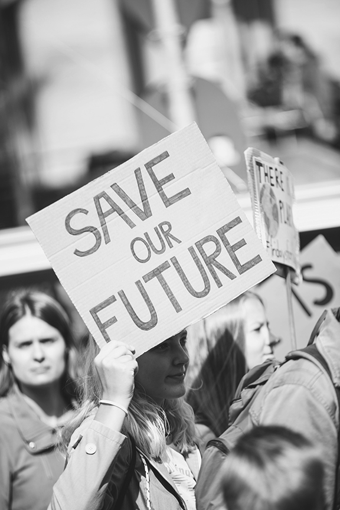
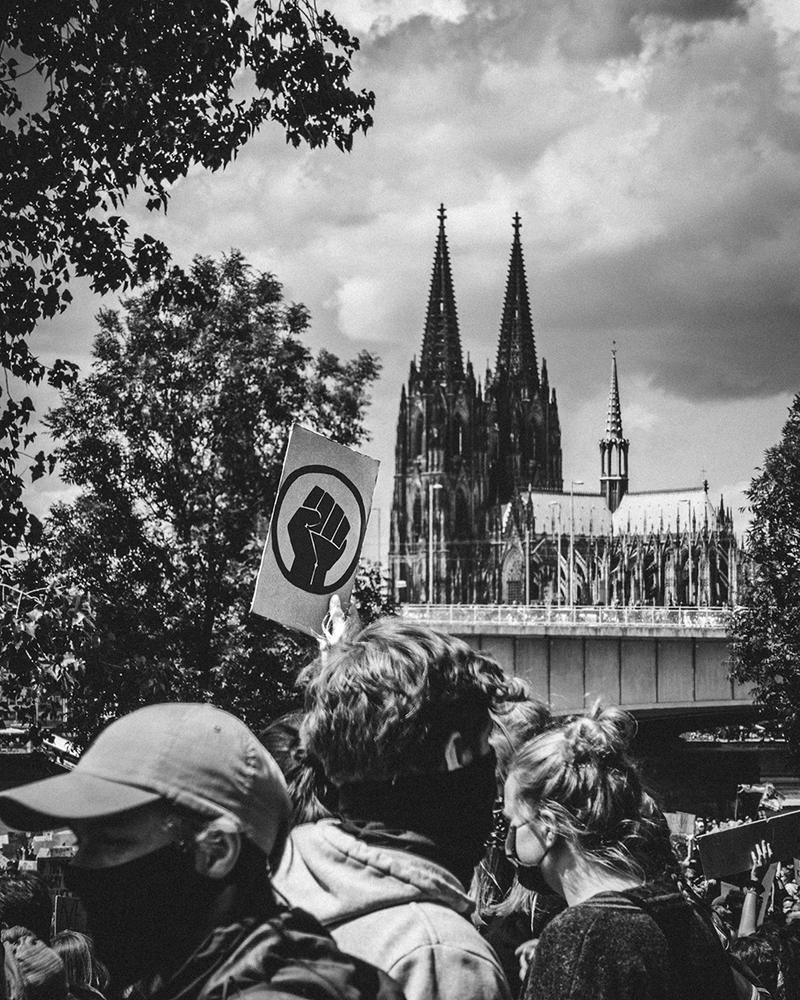
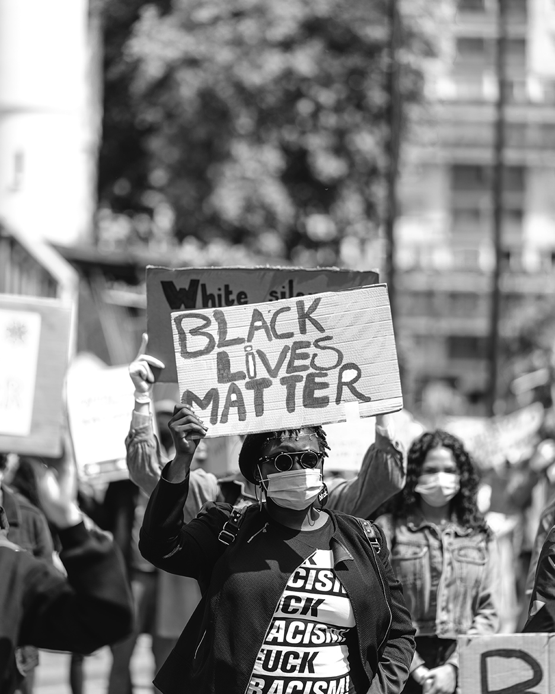

BLOG POSTS
NEW Blog Post
Be the Change BLM
6/13/2020
Breonna Taylor was murdered by a police officer. George Floyd was murdered by a police officer.
These are horrible tragedies no one should face especially in 2020 when people should know
better. After hundreds of years of slavery, we must not forget those who have come before
us and died so we could be here today and march in your streets all over the world
in honor of this human life and death. Defund the police. BLack Lives Matter!
These protests are changing laws. We urge you to stand up for what is right. Petitions
or protests in the streets. All we know is this cannot continue.
Monday Protests

Save Our Future
6/2/2020
Save our Future, she said as she held a sign next to another sign with a drawing of
our world on it. She was not fooled by the Government's ploy to get everyone sick and
create chaos a distraction for election year so one could campaign. No one could
physically meet anywhere. That was up until now. The protests have seiged the streets
with thousands of humans marching for their rights, marching for justice, for peace,
and for hope. Our children must not see this world we have created. We call for
change. Sign our petition today if you stand for justice. BLM. Save the world.
LAST WEEK
Tuesday Protests
Justice Now
6/3/2020
Don't forget about the elections people! Even though we are isolated and distracted right now by
many important
events we cannot forget that this is a Presidential Election year! Democracy must prevail! The
marches are for justice at all fronts. People must vote for our voices to be heard. We must not
remain silent. If this murder has taught us anything at all, it is to stand up for what we believe
in.
This government is not our friend. It does not support our needs as human beings on this Earth. And
this
government must be overruled by democracy. If it cannot support us, we must fight for our beliefs
any
way we know how. Of course peaceful tactics are best. Get the word out and vote democratic you, your
family and community won't be sorry. There is much to do to prepare for this giant election that the
entire world will be watching. If you aren't from a state where mail-in votes are an option we urge
you to
help us change these laws to permit mail-in voting. We must do everything in our power to win this
election
as democrats. We need to make sure that people have the option to vote in all states and not be
counted out because of
financial difficulties or health issues. Everyone must have the opporty to be heard. Sign petitions,
do whatever
you need to do to let everyone know that they deserve the option to vote by mail.
Wednesday Protests
I Will Never Understand but I Stand
6/4/2020
Our petitions have made a difference in people's lives and deaths. We are partnering with the ACLU
to
voice our concerns over unresolved issues in the political field as well as at the human level.
We believe that by taking written action we can make great changes to this country. Our Country's
name has been
tarnished worldwide. It's enough already. This President has made his point and unleashed all of the
racist and homophobic people of this country. We want to make sure they know they are not welcome
here
any longer. People are dying every day because of these insane hate crimes and inernal racism that
have
been here since the beginning of our country. Slavery should be a thing of the past not an everyday
crisis
of the present. We can no longer ignore our racist Police officers, citizens, and political figures.
We
are all a part of this mess and we must all work together to get us out. There shouldn't be one man
against another or one man against the government and all of it's employees. How have we gotten so
off track
that these hate crimes are seen as okay by government officials? We must take action. Please join us
in
signing our many petitions to stand up for the justice and equality that we know is honorable. Take
one
minute of your time to help another human in thiers.
ARCHIVE
BLOG POSTS
NEW Blog Post
Be the Change BLM
6/13/2020
A man was murdered by a police officer. This is a horrible tragedy for
no person to face especially in 2020 when people should know better by now.
After 100's of years of slavery, we must not forget those who have come before
us and died so we could be here today and march in your streets all over the world
in honor of this human life and death.
Monday Protests
Save Our Future
6/2/2020
Save our Future, she said as she held a sign next to another sign with a
drawing of our world on it. She was not fooled by the Government's ploy to get everyone sick and create
chaos
as
a distraction for election year so one could campaign. No one could physically meet anywhere. That was
up
until now.
The protests have seiged the streets with thousands of humans marching for their rights, marching for
justice,
for peace, and
for hope. Our children must not see this world we have created. We call for change. Sign our petition
today if
you stand for justice. BLM. Save the world.
LAST WEEK
Tuesday Protests
Justice Now
6/3/2020
Don't forget about the elections people! Even though we are isolated and distracted right now by many
important
events we cannot forget that this is a Presidential Election year! Democracy must prevail! The
marches are for justice at all fronts. People must vote for our voices to be heard. We must not
remain silent. If this murder has taught us anything at all, it is to stand up for what we believe in.
This government is not our friend. It does not support our needs as human beings on this Earth. And this
government must be overruled by democracy. If it cannot support us, we must fight for our beliefs any
way we know how. Of course peaceful tactics are best. Get the word out and vote democratic you, your
family and community won't be sorry. There is much to do to prepare for this giant election that the
entire world will be watching. If you aren't from a state where mail-in votes are an option we urge you
to
help us change these laws to permit mail-in voting. We must do everything in our power to win this
election
as democrats. We need to make sure that people have the option to vote in all states and not be counted
out because of
financial difficulties or health issues. Everyone must have the opporty to be heard. Sign petitions, do
whatever
you need to do to let everyone know that they deserve the option to vote by mail.
Wednesday Protests
I Will Never Understand but I Stand
6/4/2020
Our petitions have made a difference in people's lives and deaths. We are partnering with the ACLU to
voice our concerns over unresolved issues in the political field as well as at the human level.
We believe that by taking written action we can make great changes to this country. Our Country's name
has been
tarnished worldwide. It's enough already. This President has made his point and unleashed all of the
racist and homophobic people of this country. We want to make sure they know they are not welcome here
any longer. People are dying every day because of these insane hate crimes and inernal racism that have
been here since the beginning of our country. Slavery should be a thing of the past not an everyday
crisis
of the present. We can no longer ignore our racist Police officers, citizens, and political figures. We
are all a part of this mess and we must all work together to get us out. There shouldn't be one man
against another or one man against the government and all of it's employees. How have we gotten so off
track
that these hate crimes are seen as okay by government officials? We must take action. Please join us in
signing our many petitions to stand up for the justice and equality that we know is honorable. Take one
minute of your time to help another human in thiers.